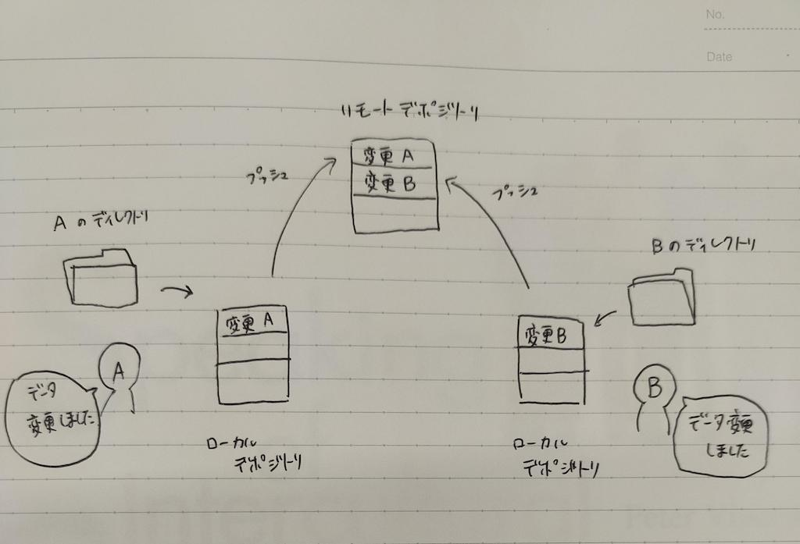
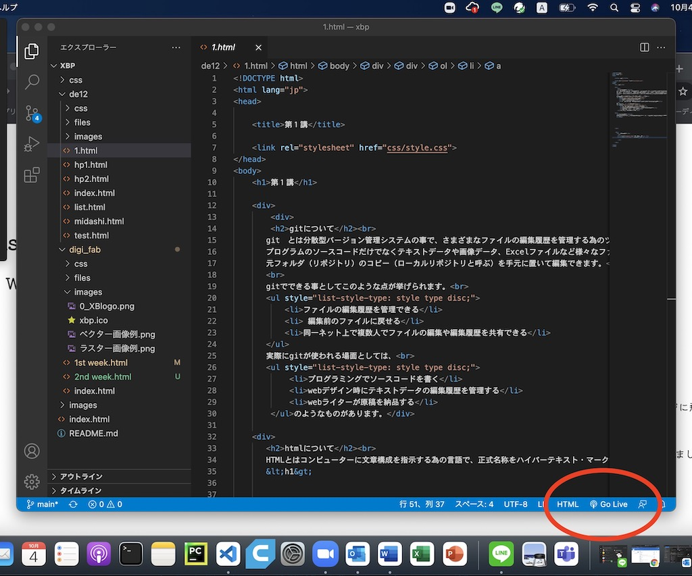

gitについて
git とは分散型バージョン管理システムの事で、さまざまなファイルの編集履歴を管理する為のツールです。
プログラムのソースコードだけでなくテキストデータや画像データ、Excelファイルなど様々なファイルを編集できます。
元フォルダ（サーバー上に作成したリモートリポジトリ）のコピー（ローカルリポジトリ）を手元に置いて編集できます。
イメージ↓

gitでできる事としてこのような点が挙げられます。
- ファイルの編集履歴を管理できる
- 編集前のファイルに戻せる
- 同一ネット上で複数人でファイルの編集や編集履歴を共有できる
実際にgitが使われる場面としては、
- プログラミングでソースコードを書く
- webデザイン時にテキストデータの編集履歴を管理する
- webライターが原稿を納品する
のようなものがあります。
Macの場合、ターミナルを使用してgit でローカルディレクトリを管理します。
HTMLについて
HTMLとはコンピューターに文章構成を指示する為の言語で、正式名称をハイパーテキスト・マークアップ・
ランゲージ（Hyper Text Markup Language）と呼びます。
Web サイトやアプリ、HTMLメールなどの作成・表示に使用されています。
HTMLを書くには、表示したい文字をタグ（意味を付けるためのマークのようなもの）で括っていきます。
※Webサイト閲覧中に右クリック→「ソースの表示」を選択すると、
そのページのソースコード（どのようなHTMLが書かれているか）を確認する事ができます。
HTMLタグについて
HTLMの編集の仕方
- VSコードを立ち上げる
- 編集したいHTMLファイルを開く
- 編集→保存する
- 編集内容を確認するには画面下の「Go Live」をクリック（web上で確認できる） 
- (Mac)ターミナルを立ち上げ、編集したファイルをGitHubにプッシュする
※詳しくはQuiita
#HP更新のためのコマンド集（外部サイト）
を確認
参考サイト
前のページへ戻る